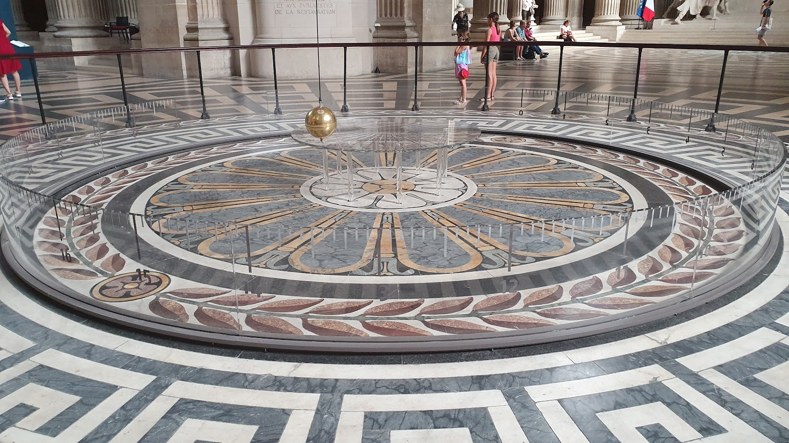

Você está convidado a vir e ver a Terra girar.
Léon Foucault, convite à demonstração no Panthéon, 18511
1 Como sabemos que a Terra gira?
Você aprendeu na aula de geografia que a Terra tem dois movimentos. Ela gira em torno do próprio eixo, o que dá origem ao dia e à noite, e percorre uma órbita em torno do Sol, o que dá origem ao ano e às estações. Provavelmente veio junto uma ilustração com uma esfera inclinada e uma seta curva, e o assunto foi encerrado ali.
A pergunta que quase nunca é feita é a seguinte: como alguém descobriu isso?
A resposta óbvia parece ser o céu. O Sol nasce a leste e se põe a oeste, as estrelas giram durante a noite em torno de um ponto fixo, as constelações mudam ao longo do ano. Tudo isso é compatível com uma Terra que gira, e por isso costuma ser apresentado como se fosse a prova do movimento.
Só que não é. E o motivo é mais interessante do que parece.
A mesma estrela chega ao zênite no mesmo instante nas duas descrições, e o mesmo vale para toda observação do céu. É por isso que olhar para cima não decide a questão.
Imagine duas hipóteses. Na primeira, a Terra gira uma vez por dia e o céu está parado. Na segunda, a Terra está parada e o céu inteiro gira uma vez por dia, no sentido contrário. Agora pergunte-se o que cada uma dessas hipóteses prevê para a posição do Sol às três da tarde, para a altura de uma estrela à meia-noite, para o nascer da Lua amanhã.
As duas preveem exatamente a mesma coisa. Sempre. Nenhuma observação do céu consegue distinguir entre elas, porque o que observamos é apenas o movimento relativo entre nós e os astros, e movimento relativo é rigorosamente o mesmo nas duas descrições. Foi por isso que a discussão durou dois mil anos, e não porque os antigos fossem tolos. Eles tinham em mãos exatamente os mesmos dados que nós, e esses dados não decidiam a questão.2
Isso não significa que a rotação da Terra seja uma hipótese arbitrária, nem que as duas descrições sejam igualmente boas. A hipótese da Terra girando é incomparavelmente mais simples, explica de uma vez só fenômenos que a outra precisa explicar um por um, e se encaixa no resto da física. Isso é uma boa evidência. Mas evidência de que uma explicação é melhor não é o mesmo que prova de que a outra é falsa.
Então de onde veio a prova? Ela não veio do céu. Veio do chão.
Se a Terra gira, ela é um referencial não inercial. E referenciais não inerciais, como vimos no texto sobre forças fictícias, deixam marcas mecânicas locais: coisas que se desviam, pesos que mudam, planos que giram. Essas marcas não dependem de olhar para lugar nenhum. Elas estão dentro da sala.
É isso que transforma as duas perguntas em uma só. Perguntar como sabemos que a Terra gira e perguntar se a Terra é um referencial inercial é fazer a mesma pergunta de dois lados. Nos próximos tópicos vamos percorrer as marcas que a rotação deixa, da mais discreta à mais visível, e ao final teremos as duas respostas ao mesmo tempo.
Com a translação foi diferente
Vale registrar uma assimetria curiosa, porque ela mostra que a astronomia não ficou de fora da história.
Para o movimento de translação, o céu consegue decidir, e decidiu. Se a Terra se desloca, as estrelas próximas devem parecer oscilar levemente ao longo do ano em relação às distantes, o que se chama paralaxe, e a luz que vem delas deve chegar com uma inclinação que muda conforme a direção do nosso movimento, o que se chama aberração. Ambos os efeitos foram procurados durante séculos e ambos foram encontrados: a aberração por James Bradley em 17293 e a paralaxe por Friedrich Bessel em 1838.4
Ou seja: a translação foi provada olhando para cima, e a rotação foi provada olhando para baixo. Esse é assunto para um texto próprio, que ainda vamos escrever.
2 Três rotações sobrepostas
Antes de procurar as marcas, convém saber o tamanho do que estamos procurando. A Terra participa de vários movimentos ao mesmo tempo, e cada um deles contribui com uma aceleração.
A rotação em torno do próprio eixo. A Terra completa uma volta em 23 horas, 56 minutos e 4 segundos, o que dá uma velocidade angular de aproximadamente \(7{,}3 \times 10^{-5}\) rad/s. No equador, onde a distância ao eixo é máxima, isso corresponde a uma aceleração centrípeta de cerca de \(0{,}034\) m/s².
A órbita em torno do Sol. Percorremos 150 milhões de quilômetros de raio a quase 30 km/s, o que resulta numa aceleração de aproximadamente \(0{,}0059\) m/s².
A órbita do Sol na galáxia. O Sol leva algo como 230 milhões de anos para dar uma volta em torno do centro da Via Láctea, e a aceleração correspondente é de cerca de \(2 \times 10^{-10}\) m/s².
O terceiro caso é tão pequeno que pode ser esquecido em qualquer aplicação terrestre. O segundo, porém, é da mesma ordem do primeiro, e isso levanta uma pergunta legítima: por que a órbita em torno do Sol não bagunça tudo?
Por que a órbita solar quase não conta
A resposta é a mesma do elevador em queda livre, e é uma das ideias mais bonitas da mecânica.
A Terra não está sendo empurrada em torno do Sol por algum motor externo. Ela está caindo em direção ao Sol, permanentemente, e é essa queda que curva sua trajetória em órbita. Como toda a Terra cai junto, e nós com ela, estamos num referencial em queda livre em relação ao Sol.
E num referencial em queda livre, como vimos no texto sobre forças fictícias, a força fictícia cancela exatamente a força gravitacional que a produz. Localmente, o efeito some. Não sentimos a órbita da Terra pela mesma razão que um astronauta não sente a órbita da Estação Espacial.
O cancelamento não é perfeito, porque a Terra tem tamanho, e o lado voltado para o Sol está um pouco mais perto dele que o lado oposto. O que sobra dessa diferença são as marés, com aceleração da ordem de \(10^{-6}\) m/s², somando as contribuições da Lua e do Sol. É pequeno, mas é o suficiente para mover oceanos inteiros duas vezes por dia.
Com a rotação em torno do próprio eixo não há nada disso. Ela não é uma queda livre, e portanto não se cancela. É por isso que, das três, é ela que deixa marcas.
3 Primeira pista: o g que medimos não é só gravidade
Comecemos pela marca mais discreta, que está numa medida que qualquer laboratório escolar faz.
A aceleração da gravidade não vale o mesmo em todo lugar. No equador, mede-se cerca de \(9{,}780\) m/s². Nos polos, cerca de \(9{,}832\) m/s². A diferença é de aproximadamente meio por cento, o que é pequeno o bastante para não atrapalhar nenhum exercício de ensino médio e grande o bastante para ser medido com facilidade desde o século XVIII.
Parte dessa diferença vem diretamente da rotação. No equador, a força centrífuga aponta para cima, contra a gravidade, e subtrai da medida aqueles \(0{,}034\) m/s² que calculamos na seção anterior. Nos polos, sobre o eixo de rotação, ela é rigorosamente nula.
Repare no que isso significa. Nenhuma balança consegue separar as duas contribuições. Quando medimos \(g\), medimos a soma da atração gravitacional com o efeito centrífugo, e não há experimento local capaz de dizer quanto é de cada um. O valor tabelado que usamos desde o primeiro ano traz a rotação do planeta embutida, sem aviso.
A conta não fecha só com a centrífuga
É tentador atribuir toda a variação de \(g\) à força centrífuga, e essa explicação circula bastante. Ela está incompleta.
A diferença total entre polo e equador é de cerca de \(0{,}052\) m/s², e o termo centrífugo responde por \(0{,}034\), isto é, aproximadamente dois terços. O terço restante vem de outro lugar: a Terra não é uma esfera.
Nosso planeta é achatado nos polos. O raio equatorial é de cerca de 6378 km e o polar de cerca de 6357 km, uma diferença de aproximadamente 21 km. Quem está no equador está mais longe do centro da Terra, e por isso sofre atração gravitacional menor.
O achatamento é, ele próprio, consequência da rotação. Mas por um caminho diferente e muito mais lento: ao longo de sua história, a Terra se comportou como um fluido e se deformou até ajustar sua forma ao efeito centrífugo. Uma coisa é a força centrífuga agindo sobre você agora, outra é a marca que ela deixou na forma do planeta ao longo de bilhões de anos. As duas contribuem para a variação de \(g\), e é preciso contar as duas.
4 Segunda pista: o fio de prumo não aponta para o centro da Terra
A segunda marca é ainda mais discreta que a primeira, e mais desconcertante quando se percebe.
Pergunte a qualquer pessoa o que é a vertical de um lugar e ela dirá que é a direção que aponta para o centro da Terra. Pergunte como se determina essa direção na prática e ela dirá que é com um fio de prumo, ou com um nível de bolha. As duas respostas parecem descrever a mesma coisa. Não descrevem.
O fio de prumo se alinha com a força resultante sobre o peso pendurado, e essa resultante é a soma da atração gravitacional, que aponta para o centro, com a força centrífuga, que aponta para fora do eixo de rotação. Como essas duas direções não coincidem, o prumo se estabiliza numa direção intermediária.
O desvio é máximo por volta dos 45 graus de latitude, onde chega a cerca de \(0{,}1\) grau, e se anula no equador e nos polos, porque só nesses dois lugares as duas forças ficam na mesma direção.
Cem milésimos de grau parecem nada, e para quase todos os efeitos práticos são nada mesmo. Mas o ponto conceitual é sério: a vertical que usamos é definida pelo prumo, não pela geometria. Toda vez que alguém nivela uma bancada, ergue uma parede ou monta um experimento de queda livre, está usando uma vertical que já leva a rotação da Terra embutida. Aquela linha, rigorosamente, não passa pelo centro do planeta.
Há um fechamento elegante aqui. A superfície dos oceanos também se ajusta perpendicularmente à resultante, e não à atração gravitacional pura. É exatamente esse ajuste, repetido por toda a superfície e ao longo do tempo geológico, que produziu o achatamento discutido na seção anterior. As duas pistas são a mesma coisa vista em escalas diferentes.
5 As provas diretas: corpos em queda
As duas pistas anteriores são reais, mas têm uma limitação: elas mostram que existe um efeito centrífugo, e não que a Terra gira em relação a algum referencial. Um defensor da Terra parada poderia sempre argumentar que a distribuição de massa do planeta é assim mesmo.
A prova que interessa precisa ser diferente. Precisa ser um efeito que só apareça quando alguma coisa se move em relação ao solo, porque é isso que caracteriza um referencial em rotação. Precisa, em outras palavras, ser um efeito de Coriolis.
E o primeiro que ocorreu a alguém foi o mais simples possível: soltar uma pedra do alto de uma torre.
O topo de uma torre está mais longe do eixo de rotação da Terra que a base, e portanto se desloca para leste um pouco mais rápido. Uma pedra abandonada lá em cima carrega consigo essa velocidade a mais durante toda a queda. Ao chegar ao solo, ela deve cair um pouco a leste do ponto exatamente abaixo do lançamento.
A previsão é limpa e não tem alternativa: numa Terra parada, o desvio é zero.
Queda para leste, arremesso para oeste
Vale conectar com o que vimos no texto sobre forças fictícias. Lá, um objeto arremessado verticalmente para cima e recebido de volta cai a oeste do ponto de lançamento. Aqui, um objeto simplesmente abandonado cai a leste.
Não há contradição. São movimentos diferentes, e o desvio total é o resultado da integração ao longo de todo o percurso. No arremesso completo, a etapa de subida domina e inverte o resultado, chegando a um desvio quatro vezes maior, em sentido oposto, ao de uma queda simples a partir da altura máxima.
A história dessa medida é longa e vale a pena.
O primeiro registro do raciocínio aparece em 1674, num diagrama de Claude Dechales. Em novembro de 1679, numa carta a Robert Hooke, Newton propôs que o efeito fosse medido, como prova experimental direta da rotação da Terra.5 Hooke tentou, soltando corpos de cerca de 8 metros de altura. Naquela altura e na latitude de Londres, o desvio previsto é de uma fração de milímetro, e o resultado foi inconclusivo.
O primeiro resultado positivo veio mais de um século depois. Em 1791, em Bolonha, Giovanni Battista Guglielmini soltou dezesseis bolas de chumbo do alto da Torre degli Asinelli, com 78 metros de queda, comparando o ponto de chegada com a vertical dada por um fio de prumo. Nas décadas seguintes o experimento foi refeito em várias cidades, com precisão crescente.
| Autor | Ano | Local | Altura | Desvio medido | Desvio previsto |
|---|---|---|---|---|---|
| Hooke | 1679 | Londres | 8,2 m | inconclusivo | ~0,25 mm |
| Guglielmini | 1791 | Bolonha | 78 m | 18,9 mm | ~10,7 mm |
| Benzenberg | 1802 | Hamburgo | 76 m | 9,0 mm | 8,6 mm |
| Reich | 1831 | Freiberg | 158 m | 28,4 mm | 29,0 mm |
O resultado de Reich, obtido no poço de uma mina, com 106 quedas, é impressionante para a época. A concordância com a previsão fica dentro de dois por cento.
Duas honestidades sobre esses experimentos
A primeira. Repare no resultado de Guglielmini: ele mediu quase o dobro do previsto. Foi, ainda assim, celebrado como a confirmação experimental da rotação da Terra, e com alguma razão, porque o desvio existia, era para leste, e a hipótese da Terra parada previa zero. Mas o episódio serve de lembrete de que "confirmar uma teoria" raramente é uma questão de números que batem. É uma questão de julgamento sobre o que os números significam, e esse julgamento pode ser generoso demais. Só com Benzenberg e Reich, décadas depois, o acordo quantitativo apareceu de fato.
A segunda. Nada disso era necessário para convencer alguém. Em 1791 já fazia mais de um século que a rotação da Terra era consenso entre os que estudavam o assunto, e a translação já tinha sido provada astronomicamente por Bradley em 1729. Esses experimentos não mudaram a opinião de ninguém.
Isso não os torna inúteis. O valor deles é outro, e é epistemológico: eles mostraram que a rotação pode ser detectada localmente, sem olhar para o céu, com uma pedra e uma torre. Uma coisa é acreditar num modelo porque ele organiza bem as observações astronômicas. Outra é medir o efeito no seu próprio quintal.
6 O pêndulo de Foucault
Os experimentos de queda tinham um problema de comunicação. Os desvios eram de milímetros, exigiam controle experimental sofisticado, e ninguém fora do meio científico conseguia apreciá-los. Faltava uma demonstração que qualquer pessoa pudesse ver acontecendo.
Em 1851, Léon Foucault resolveu esse problema.
A ideia é de uma simplicidade desconcertante. Um pêndulo posto a oscilar mantém seu plano de oscilação, porque nenhuma força atua na direção perpendicular a esse plano. Se a Terra gira embaixo dele, então, para quem está no chão, o plano de oscilação parece girar lentamente. Não é o pêndulo que muda. É o observador.
Foucault fez a primeira demonstração em fevereiro de 1851, no Observatório de Paris, e em março montou a versão que ficou famosa: uma esfera de latão de 28 kg, suspensa por um fio de 67 metros na cúpula do Panthéon, com uma ponta que riscava areia espalhada no chão.9 O público podia acompanhar, marca a marca, o plano girando.

A velocidade dessa rotação depende da latitude, e é aqui que o experimento fica particularmente elegante, porque a dependência é a mesma da força de Coriolis que vimos no texto anterior. O tempo que o plano leva para completar uma volta é
Coloque números nessa fórmula e ela conta uma história:
- Num dos polos, o plano completa uma volta em cerca de 24 horas. É o caso mais fácil de entender: o pêndulo simplesmente fica parado enquanto a Terra roda por baixo dele.
- Em Paris, na latitude de aproximadamente 49 graus, cerca de 32 horas. Foucault previu 31 horas e 50 minutos, e foi o que se observou.
- Em São Paulo, cerca de 60 horas. No Rio de Janeiro, onde há um pêndulo de Foucault instalado na UERJ, aproximadamente 62 horas.
- No equador, o plano não gira nunca.
Esse é o mesmo fator \(\operatorname{sen}\lambda\) que apareceu na expressão da força de Coriolis, e pela mesma razão: o que importa é a componente da rotação da Terra em torno da vertical do lugar. Perto do equador essa componente é pequena, e é por isso que a demonstração é bem mais difícil de fazer no Brasil do que na Europa.
O que o pêndulo provou, e o que não provou
A frase que se repete por aí é que Foucault provou que a Terra gira. Ela precisa de duas correções.
Primeira: em 1851 ninguém duvidava disso. A rotação era consenso científico havia séculos, e provas experimentais locais já existiam desde Guglielmini, sessenta anos antes. Foucault não resolveu uma controvérsia aberta.
Segunda: a demonstração do Panthéon, apesar do enorme sucesso de público, não convenceu inteiramente a comunidade científica da época. Foi por isso que Foucault desenvolveu, no ano seguinte, um instrumento de precisão para a mesma finalidade, e batizou-o de giroscópio. O giroscópio mantém a orientação de seu eixo independentemente da latitude, o que torna a evidência mais direta.
O mérito do pêndulo é outro, e é grande. Ele transformou a rotação da Terra em algo que se olha. Não um cálculo, não uma medida de milímetros feita por especialistas, mas um objeto se movendo devagar num salão, ao alcance de qualquer pessoa que tivesse a paciência de esperar algumas horas. Poucos experimentos na história da ciência conseguiram tanto com tão pouco.
7 Quando a Terra serve como referencial inercial, afinal
Chegamos com material suficiente para responder à pergunta do título, e a resposta honesta é: depende da precisão que o problema exige.
Não existe referencial "inercial" ou "não inercial" no sentido absoluto do dia a dia. Existe um referencial cujos desvios em relação ao comportamento inercial são grandes ou pequenos comparados ao que você precisa medir. A Terra é péssima como referencial inercial para um meteorologista e excelente para quem estuda o choque de duas bolas numa mesa.
O critério que estabelecemos no texto sobre forças fictícias organiza isso bem. Os efeitos da rotação terrestre importam em fenômenos que duram horas e se estendem por centenas de quilômetros. Abaixo disso, são desprezíveis.
| Situação | A Terra serve como inercial? | Por quê |
|---|---|---|
| Colisão de carrinhos numa bancada | Sim, com folga | Dura segundos, ocupa centímetros |
| Queda de um corpo de 2 m de altura | Sim | Desvio da ordem de centésimos de milímetro |
| Lançamento de projétil de algumas centenas de metros | Sim, para fins didáticos | Desvio de poucos centímetros |
| Tiro de artilharia de longo alcance | Não | Dezenas de metros de erro no alvo |
| Ciclone | De jeito nenhum | Sem Coriolis, o fenômeno nem existiria |
| Corrente oceânica | De jeito nenhum | Escalas de milhares de quilômetros e meses |
| Navegação por satélite | Não | Exige tratamento de referencial girante e ainda correções relativísticas |
Repare que os três primeiros casos cobrem essencialmente tudo o que se faz num curso de mecânica. É por isso que a aproximação funciona tão bem no ensino, e é também por isso que ela precisa ser dita como aproximação, e não como fato.
8 E onde está o referencial inercial, então?
Fechamos com um incômodo.
A Terra não é um referencial inercial, e agora sabemos por quais marcas isso se detecta. Mas o Sol também não é: ele orbita o centro da galáxia. E a galáxia também não é: ela se move em relação às galáxias vizinhas, e o Grupo Local se move em relação ao restante do universo observável.
A escada não termina. Cada vez que apontamos um referencial melhor, ele resulta acelerado em relação a algum outro. E então a pergunta que a Primeira Lei de Newton pressupõe respondida continua sem resposta: em relação a quê, afinal, se mede a aceleração verdadeira?
Newton tinha uma resposta pronta, e ela era ousada: existe um espaço absoluto, imóvel por natureza, e é em relação a ele que os movimentos verdadeiros acontecem. Ernst Mach, dois séculos depois, achou essa resposta inaceitável, porque o espaço absoluto não pode ser observado nem medido, e propôs outra: o que define o referencial inercial é a distribuição de toda a matéria do universo, ou, na imagem que ficou famosa, as estrelas distantes.10
Essa discordância não é um detalhe técnico. Ela vai ocupar duzentos anos de filosofia natural e desembocar diretamente na Relatividade Geral, e é o assunto de outro texto deste site.
Referências
- CENTRE DES MONUMENTS NATIONAUX. Panthéon: le pendule de Foucault. ↩
- GALILEI, Galileu. Diálogo sobre os dois máximos sistemas do mundo ptolomaico e copernicano. Tradução de Pablo Rubén Mariconda. São Paulo: Discurso Editorial / Imprensa Oficial, 2004. Segunda Jornada. ↩
- BRADLEY, James. A letter concerning an apparent motion observed in some of the fixed stars. Philosophical Transactions of the Royal Society, 1729. ↩
- BESSEL, Friedrich Wilhelm. Bestimmung der Entfernung des 61sten Sterns des Schwans. Astronomische Nachrichten, 1838. ↩
- NEWTON, Isaac. Carta a Robert Hooke, 28 de novembro de 1679. Em: The Correspondence of Isaac Newton, v. 2. Cambridge: Cambridge University Press. ↩
- GUGLIELMINI, Giovanni Battista. De diurno terrae motu experimentis physico-mathematicis confirmato. Bolonha, 1792. ↩
- BENZENBERG, Johann Friedrich. Versuche über das Gesetz des Falls, über den Widerstand der Luft und über die Umdrehung der Erde. Dortmund: Mallinckrodt, 1804. ↩
- GIANNINI, Giulia. Gianantonio Tadini and falling bodies: a new documentary source for the reconstruction of the history of experimental proofs on the Earth's rotation. History of Science, 2015. ↩
- FOUCAULT, Léon. Démonstration physique du mouvement de rotation de la Terre au moyen du pendule. Comptes Rendus des Séances de l'Académie des Sciences, Paris, v. 32, 1851. ↩
- MACH, Ernst. Die Mechanik in ihrer Entwicklung historisch-kritisch dargestellt. Leipzig, 1883. ↩